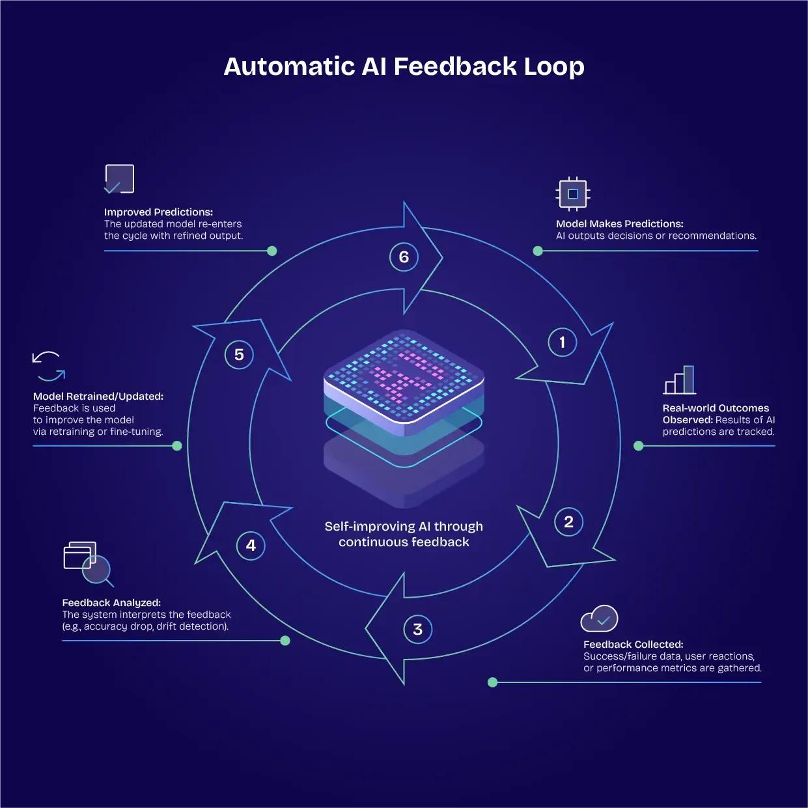

Introduction
Bootstrapping AI means using an existing AI system to help build a better one. This may help people solve problems and develop new technology.
Recursive self-improvement happens when each improved AI system helps make the next version better.
How Does It Work?
For example, AI can help programmers find mistakes in code. People check its suggestions and use the good ones to improve the system.

Basic Steps
- Build an AI system.
- Use it to help with tasks.
- Check its answers and find mistakes.
- Use reliable suggestions to improve the AI.
- Test the improved system and repeat.
AI cannot improve forever on its own. It needs good data, testing, computing power, and human guidance.
Uses of AI Bootstrapping
- Programming: Finding errors and writing code.
- Science: Helping researchers explore ideas.
- Machine learning: Checking how AI systems perform.
- Education: Explaining topics to students.
- Robotics: Testing how robots work.
Learn more: IBM's AI introduction and NIST AI resources.
Traditional AI vs. AI Improvement
| Topic | Traditional AI | AI-Assisted Improvement |
|---|---|---|
| Development | People do most of the work. | AI helps with some tasks. |
| Testing | People and tools test the system. | AI can help create and check tests. |
| Changes | People decide what to change. | AI suggests changes for people to check. |
| Main challenge | Time and effort | Safety and accuracy |
Challenges and Risks
AI can make mistakes or give wrong answers. If people use these answers without checking them, the mistakes may continue in future systems.
People should test AI carefully, protect private information, and make sure it is fair and safe. Fast improvement is useful only when the results are reliable.
The Future of AI
AI may help people write code, run experiments, and test new systems faster. People will still need to check its work and guide its development.
Conclusion
Bootstrapping AI means using AI to help create better AI. It could be useful in programming, science, education, and other fields.
However, AI needs careful testing and human guidance to become more reliable and safe.